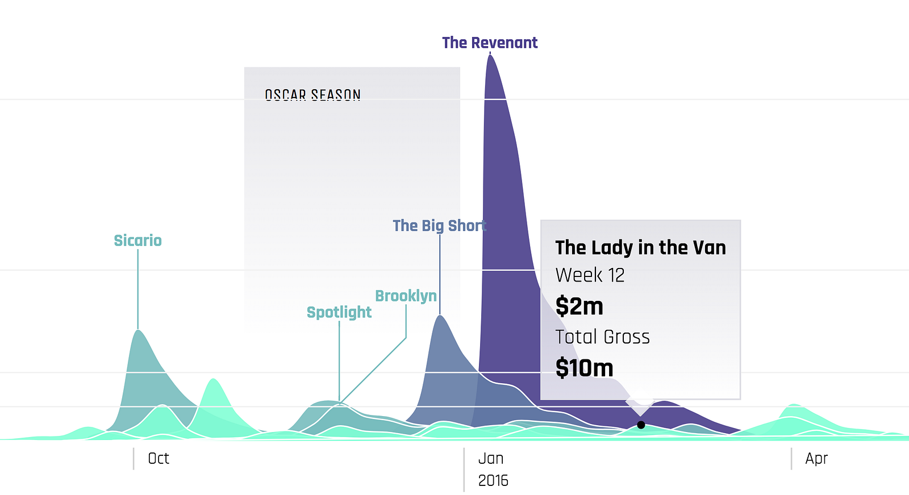
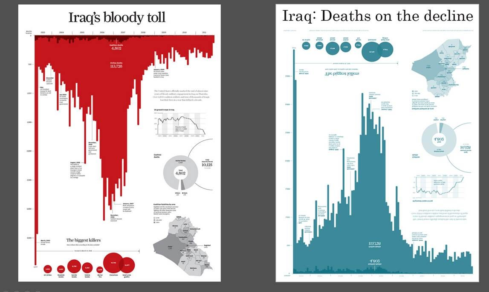
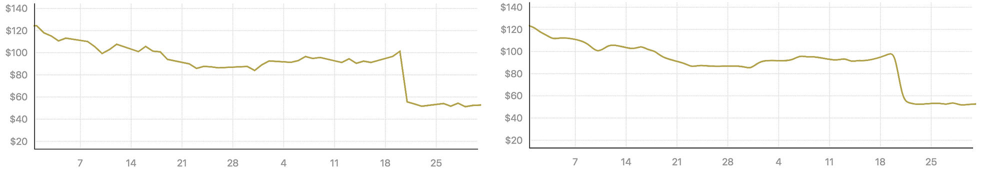
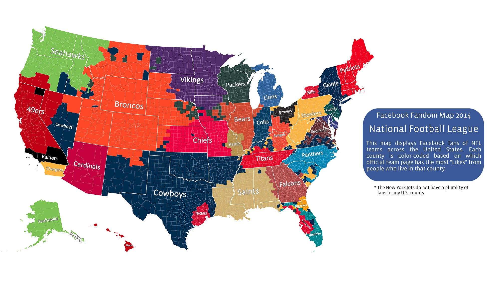
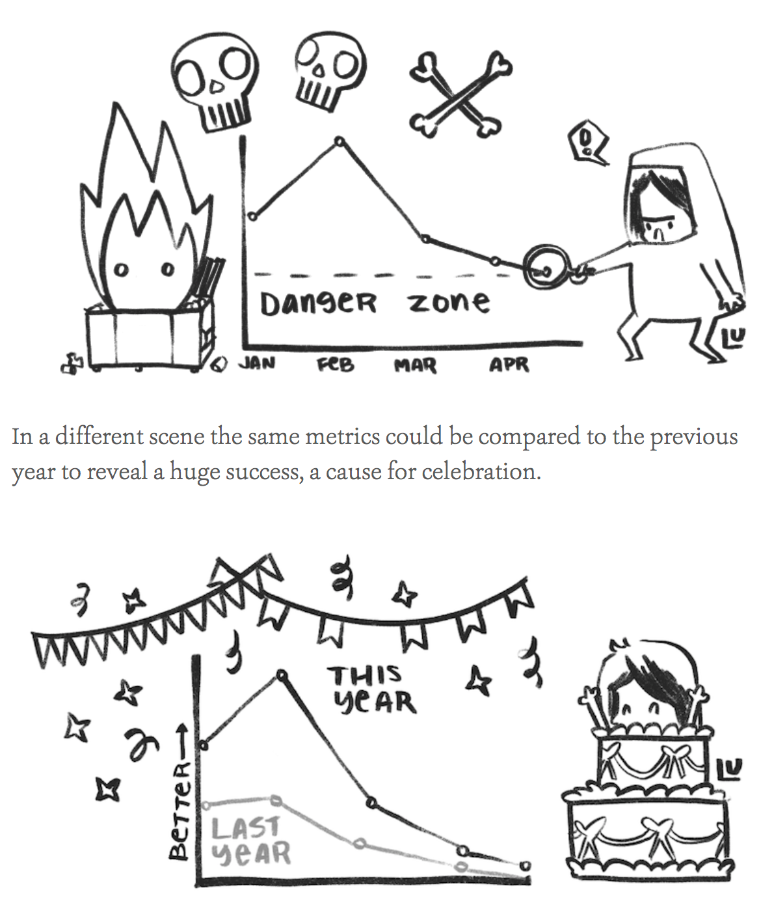

All charts say something. They are a form of communication and we can evaluate them as such. Like any other statement, a chart says something explicitly — by which I mean a chart really does have that “show me the data” quality. But that’s a dangerous expression, because data doesn’t have a natural form, it’s something that needs to be determined by the person creating the data visualization. That explicit channel exists alongside other messages your chart expresses whether you intend it to or not, which can be described as implicitly, systematically and descriptively.
A well-designed interactive chart lets you see and interrogate a dataset very closely and more fluidly than a table or query view. This is often all fast data visualization is optimized for. This can be thought of as what a chart says explicitly and we optimize for this by choosing the charting method that maximizes the ability to display and query that data. Qualities like precision, accuracy and recall are all aligned with this approach. That’s why most data visualization experts focus on scatterplots, line charts and bar charts which are methods that are best-suited for these qualities

But charts also make implicit statements in their form and the methods they use to display data. As pieces of communication, charts are just as subject to rhetorical devices and stylistic form over content to achieve their goals. While it’s popular to deride this as “dishonest” or getting in the way of the data, no chart is an unbiased view of the data.
All data is transformed to be in a chart, and the inaction of not designing that transformation carries just as strong an implication as the action of transforming it. When the implications of a chart are taken into account, you can see simple shifts, like orienting a bar chart downward and using dark red, that dramatically reinforce the subject and theme of a chart.

The implicit channel of a data visualization can be even more powerful than the explicit channel, according to a recent paper on the subject. The title you use and other framing elements can affect recall, impact and theme of the chart without the reader even realizing it.

By their very nature, charts also say something about the systematic quality of the data they express. While diagrams of complex systems such as flow diagrams or algorithm visualization are explicitly about systems, all charts display data and all data is a proxy for the systems that created and measured that data. Any map of how Facebook users connect or what baseball teams they root for is simultaneously a map of the kind of data that Facebook collects. Every cool data visualization you see of the census or of spending patterns from a bank is a view into that system.

There’s a cautionary tale here for anyone releasing data visualization: a chart is proxy evidence for a system. This shouldn’t catch us off guard since so many charts are based on proxy evidence of a system, but it does and, more importantly, these lessons aren’t just intended for people making charts but also for people reading charts. For them, there’s a sort of cruel irony to the way we simultaneously share these data products so enthusiastically while bemoaning the privacy issues that are necessary for their creation.
Finally, charts do not arrive as purely graphical elements (except perhaps the most abstract diagrams). Instead, charts say things in the way they are described both internally (via axes, labels and annotations) and externally (in the text that appears around them in figure descriptions or discussion).
A data dashboard is very different than a supplemental figure presented in a scientific paper. Different annotations of the same line change the nature of the chart’s message. Description and annotation is doubly important for complex charts that not only need to use them to refine and convey information but also for the purpose of educating the reader on how to understand the chart.

One of my favorite examples of this is a cartoonish exaggeration but it’s okay because it’s a literal cartoon by Susie Lu. In it we see the difference a few annotation and axis elements make.
There are some key differences between what charts say descriptively and what charts say implicitly, even though they both might seem the same to those who think any chart that isn’t a spartan grey and blue bar chart is a transgression.
First, the implicit channel is passive and affects the reader more in a subconscious fashion, whereas the descriptive channel is active and purposeful. Authored annotations, figure descriptions and axis labels are all authored and relay data points with text in a more blatant manner than color and other graphical design. Titles, which I place in the implicit channel, are often forgotten by readers in a way that belies their textual nature because they are more interpretive and broad than an individual axis label or annotation.
Second, implicit messages in a chart are not data-driven but are rather thematic. Annotations and axis labels exist in data space even though they are not data. Figure descriptions are readings of the data and notes about how to read the chart are very much of the data.
Some rules for improving what a chart says
Explicitly: Data needs to be exposed cleanly and clearly and capable of being interrogated by the reader. Charts should be optimized for query or validation and authors of charts that are good at this understand the difference between accuracy and precision.
Implicitly: Charts should be distinctive if their dataset is distinctive or stylistically related if the data/view is related. Above all style should be intentional, purposeful and thematically appropriate. Titles, colors and other graphical design elements should have well-reasoned justification for their choices and not be the result of defaults or superficial decisions.
Systematically: Care should be taken not to reveal an underlying system that is proprietary or confidential. Data provenance should be as close to the chart as possible (either through notes or charts). Systems should influence the design and iteration process as avenues of exploration (chart inversion, multimodal network projection). In cases where a data visualization is for the purpose of understanding a system, strive to represent that system rather than the easier to measure proxies of that system. This means more network diagrams and fewer bar charts.
Descriptively: Annotations should be present whenever possible, and preferred over interactivity, which is spotty. Labels should be descriptive and aware of how they magnify or occlude the data. Axis elements should be treated as data visualization and open to interactivity, robust styling and smart labels.
What does your chart say that you didn’t intend?
All charts say things their creators intend and many say things that were not intended. This is especially true when charts are shown to audiences their creators did not predict. By being more explicit in our own understanding of what charts say and how we can systematically describe what they say, we can grow more capable of using the channels available in that expression to our advantage. Otherwise, we risk putting a chart into the world that might damage or disrupt the communication we intended to improve.